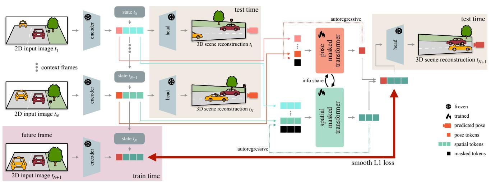

arXiv 新增 + ICML 2026 Poster + 3D latent world model · P1 · 2026-06-18
Future Dynamic 3D Reconstruction：它和通用视觉自监督的关系在于：把未来视频预测提升到 persistent 3D latent reconstruction，并显式解耦 ego-motion 和 scene dynamics
中高相关；详见方法、贡献和实验边界。
Future Dynamic 3D Reconstruction: A 3D World Model with Disentangled Ego-Motion arXiv 新增 + ICML 2026 Poster + 3D latent world model 原文链接
编号2606.18250优先级P1类别arXiv 新增 + ICML 2026 Poster + 3D latent world model会议arXiv 新增 + ICML 2026 Poster + 3D latent world model方法把未来视频预测提升到 persistent 3D latent reconstruction，并显式解耦 ego-motion 和 scene dynamics来源arXiv / OpenReview
先说结论。它和通用视觉自监督的关系在于：把未来视频预测提升到 persistent 3D latent reconstruction，并显式解耦 ego-motion 和 scene dynamics。 中高相关；详见方法、贡献和实验边界。
Figureure 1 · The proposed FR3D is a 3D world model predicting future 3D reconstructFigure 1. The proposed FR3D is a 3D world model predicting future 3D reconstruction of dynamic scenes that takes monocular images as input. FR3D disentangles the forecasting of the induced ego-camera motion from that of the 3D scene structure. As shown in these future predictions of challenging scenes, FR3D successfully handles dynamic scenes with traffic in both directions (above) and estimates turning events smoothly (below).这张图来自论文 PDF 的结构化抽取。当前用于辅助理解 Future Dynamic 3D Reconstruction 的方法或实验，请结合正文精读段落一起看。

Figureure 2 · The proposed FR3D takes in input a sequence of images as context (up tFigure 2. The proposed FR3D takes in input a sequence of images as context (up to time $t _ { N } ) ,$ , and outputs a unified 3D scene reconstruction with ego camera poses autoregressively for the next timestamps (from $t _ { N + 1 }$ onwards) without accessing the corresponding images. Tokens and state are internal representations of the scene from previous frames, and the model estimates future tokens and decodes them into a 3D reconstruction by leveraging an off-the-shelf foundation model (its encoder, its decoder used to combine the current tokens with the state, and its heads), such as CUT3R (Wang et al., 2025b). The future prediction is performed by two masked transformers: one for ego poses and one for scene geometry. FR3D is trained autoregressively in a teacher-student paradigm by mimicking the token space of the frozen foundation model via a smooth L1 loss.这张图来自论文 PDF 的结构化抽取。当前用于辅助理解 Future Dynamic 3D Reconstruction 的方法或实验，请结合正文精读段落一起看。
核心问题
它和通用视觉自监督的关系在于：把未来视频预测提升到 persistent 3D latent reconstruction，并显式解耦 ego-motion 和 scene dynamics。
方法拆解
把未来视频预测提升到 persistent 3D latent reconstruction，并显式解耦 ego-motion 和 scene dynamics